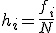
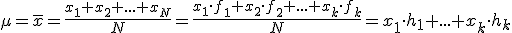
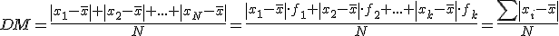
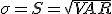

Estadística
Resumen
La Estadística es la Ciencia que recoge datos, los describe de una manera simple y útil, los analiza e interpreta con la ayuda de la teoría de la Probabilidad.
La Estadística moderna es la mezcla de dos disciplinas que se desarrollaron independientemente hasta que se unificaron en el siglo XIX:
– La Probabilidad, que nació en el siglo XVII, como teoría matemática de los juegos de azar (dados, lotería,…)
– La Estadística (o ciencia del Estado) que estudia la descripción de los datos y es muy antigua (en China sobre el 2000 AC se data el primer censo de población conocido)
Población es el conjunto de elementos objeto del estudio estadístico.
Cuando la población es muy numerosa o inaccesible, extraemos una muestra o subconjunto de ella. El número de elementos de la muestra, N, se llama tamaño de la muestra. Es muy importante para nuestro estudio que la muestra sea representativa de la población.
Individuo es cada elemento de la población o de la muestra.
Variable es la característica que estamos estudiando en cada individuo.
Hay diferentes tipos:
– Variable cualitativa: si es no numérica.
– Variable cuantitativa: si es numérica. Hay dos tipos:
• Variable cuantitativa discreta: si toma valores aislados.
• Variable cuantitativa continua: Si toma cualquier valor entre dos dados.
El proceso estadístico tiene los siguientes pasos principales:

1º.- ¿Qué queremos estudiar?
2º.- Selección de las variables. Tenemos que elegir las variables a estudiar y sus posibles valores
3º.- Recolección de datos. Haremos las encuestas o medidas necesarias
4º.- Organización de los datos
5º.- Elaboración de tablas o gráficas
6º.- Cálculo de parámetros
7º.- CONCLUSIONES
En Estadística, la frecuencia de un suceso xi es el número fi de veces que el suceso ha ocurrido en el experimento o estudio.
Llamamos frecuencia absoluta a la propia fi, y frecuencia relativa cuando la dividimos por el número total de sucesos:

Para completar una tabla, aparte de la frecuencia absoluta, añadimos columnas con las frecuencias absolutas acumuladas (la suma de las frecuencias anteriores), las frecuencias relativas, las frecuencias relativas acumuladas y los porcentajes.
Tenemos muchos valores diferentes y tenemos que agruparlos en clases o intervalos. Elegiremos aproximadamente la raíz cuadrada de N clases e intentaremos que los extremos de los intervalos sean “números redondos”.
En la tabla hay que poner también la marca de clase, la cual es el punto medio del intervalo.
Las gráficas estadísticas nos dan una información inmediata. Estas son las principales y los tipos de variables recomendados para cada una:
DIAGRAMA DE SECTORES: recomendado para variables cualitativas. La fórmula del ángulo central es:
DIAGRAMA DE BARRAS: recomendado para variables cuantitativas discretas (sin agrupar).
HISTOGRAMA Y POLÍGONO DE FRECUENCIAS: recomendado para variables cuantitativas continuas y con datos agrupados.
Si queremos un análisis más profundo, también necesitamos información numérica, a través de los parámetros.


Hay dos tipos de parámetros:
– Medidas de centralización: media, moda y mediana. Nos dan información sobre cuál es el valor en el “centro” de la distribución de datos.
Media (o media aritmética): se calcula sumando todos los números y dividiendo por N (el tamaño de la muestra o de la población).

Mediana: Si ordenamos los números de menor a mayor, la mediana es el valor que está en medio, si hay un número impar, o la media de los dos valores centrales, si hay un número par. El lugar de en medio es:
Moda: es el número (o números) de mayor frecuencia.
– Medidas de dispersión: rango o recorrido, desviación media, desviación típica y varianza. Nos dicen cómo de dispersos están los datos.
Rango o recorrido: es la resta del mayor valor menos el menor.
Desviación media: es la media de las desviaciones de la media:

Varianza:
Desviación típica:

Se define como la razón entre la desviación típica y la media. Es una medida de dispersión relativa y se usa para comparar la dispersión de dos o más poblaciones:
Obra publicada con Licencia Creative Commons Reconocimiento No comercial Compartir igual 4.0